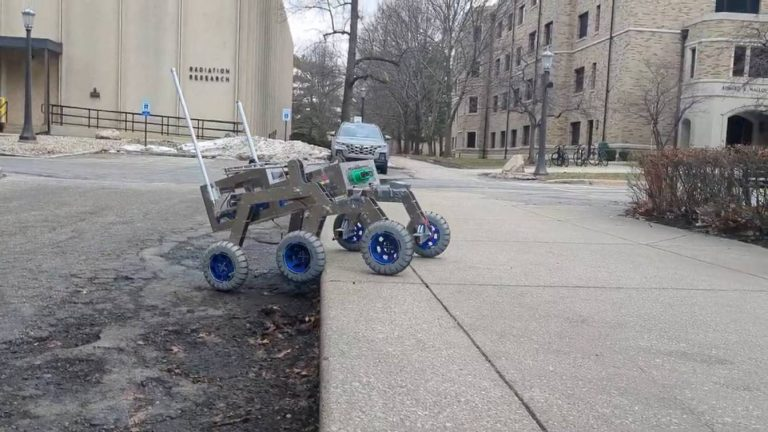
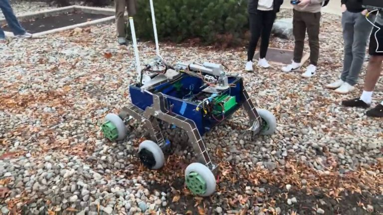
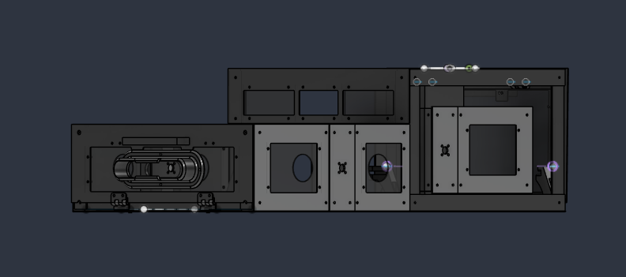
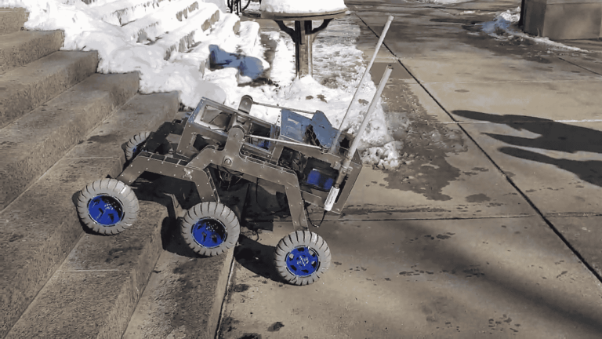
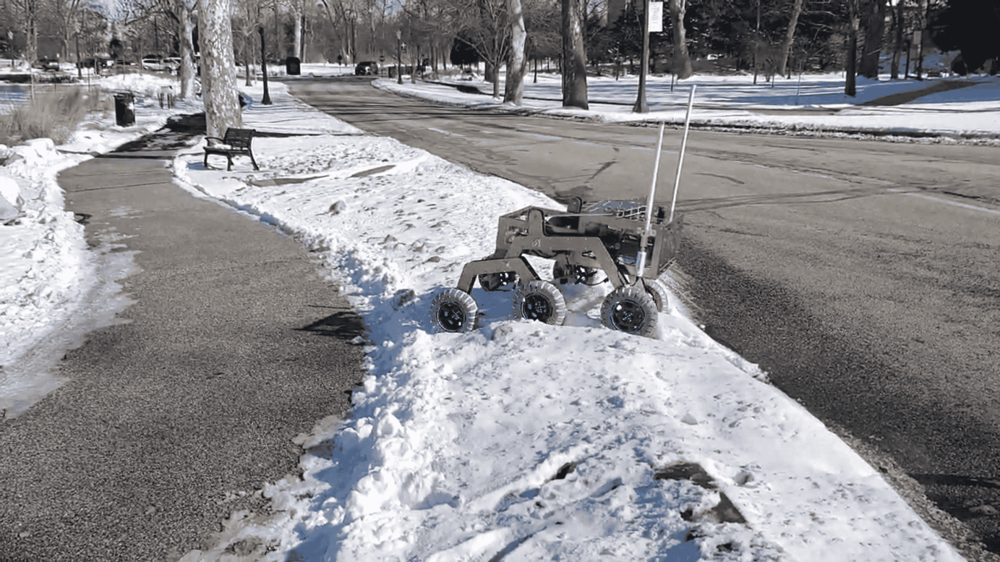

Rover Central Housing Unit

About Domer Rover
Domer Rover is a multidisciplinary student team at the University of Notre Dame developing a rover for the University Rover Challenge. The project brings together mechanical, electrical, autonomy, and communications work to build an integrated vehicle with interchangeable arm and science payloads.
Project Overview
I led the redesign and manufacture of Domer Rover’s central housing unit (CHU), the structure that accommodates the rover’s electronics, computing, power distribution, and wiring while supporting interchangeable mission payloads. The project required coordinating mechanical design with the needs of the electrical, autonomy, and communications teams.
As Project Manager for our multidisciplinary University Rover Challenge team, I helped guide design decisions around mission requirements, subsystem interactions, and the time available for manufacturing and integration.
Redesigning the Structure
The original acrylic housing lacked sufficient stiffness and load capacity to support the rover’s payloads. Its internal layout also made organizing electrical components difficult, and it lacked a suitable mounting interface for exchanging the arm and science modules.
To address these limitations, we redesigned and manufactured the CHU using aluminum. My work focused on developing a stronger structure while improving internal organization, subsystem accessibility, and payload integration.

Modular Payload Integration
The redesigned CHU has an open front section with a latching interface that allows the arm module or science module to be attached as needed. This arrangement lets the team change the rover’s mission configuration while retaining the same central housing.
The housing also accommodates the Jetson Nano computer, batteries, cooling equipment, LiDAR, camera, and wiring. Integrating these components required considering their mounting needs, accessibility, and connections to the rover’s other subsystems.

Balance and Suspension Integration
I considered the housing and its components as part of the complete rover assembly, including their relationship to the rocker-bogie suspension. We used a fulcrum test to determine where the CHU balanced, helping guide placement relative to the suspension.
This physical assessment informed our integration decisions by connecting the housing’s internal packaging with its position on the rover.

Adapting to Changing Requirements
Subsequent component changes introduced new requirements for the housing. I helped evaluate whether to rebuild the structure or adapt the existing design, considering the expected benefits and the schedule available.
Working with the team, I helped select targeted modifications that addressed the evolving requirements while retaining the existing housing. This required collaborative judgment across subsystems and balancing design improvements with practical integration needs.


The assembled rover in operation, showing the CHU integrated with the rocker-bogie suspension.
Project Outcome
The project progressed from an acrylic housing with structural and packaging limitations to a manufactured aluminum CHU with an interchangeable payload interface. Through the redesign, I gained experience in mechanical design, subsystem integration, physical balance assessment, and managing engineering changes within a multidisciplinary team.